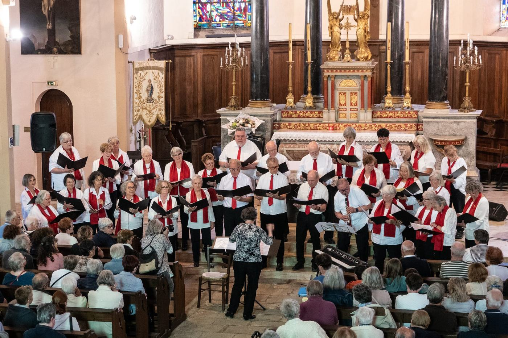
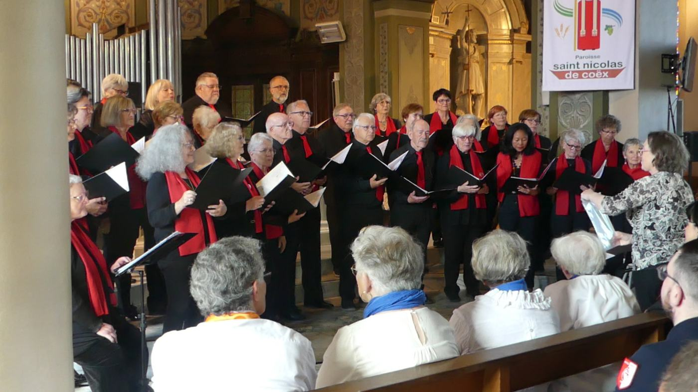
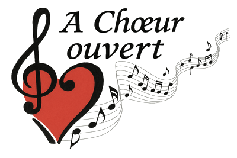
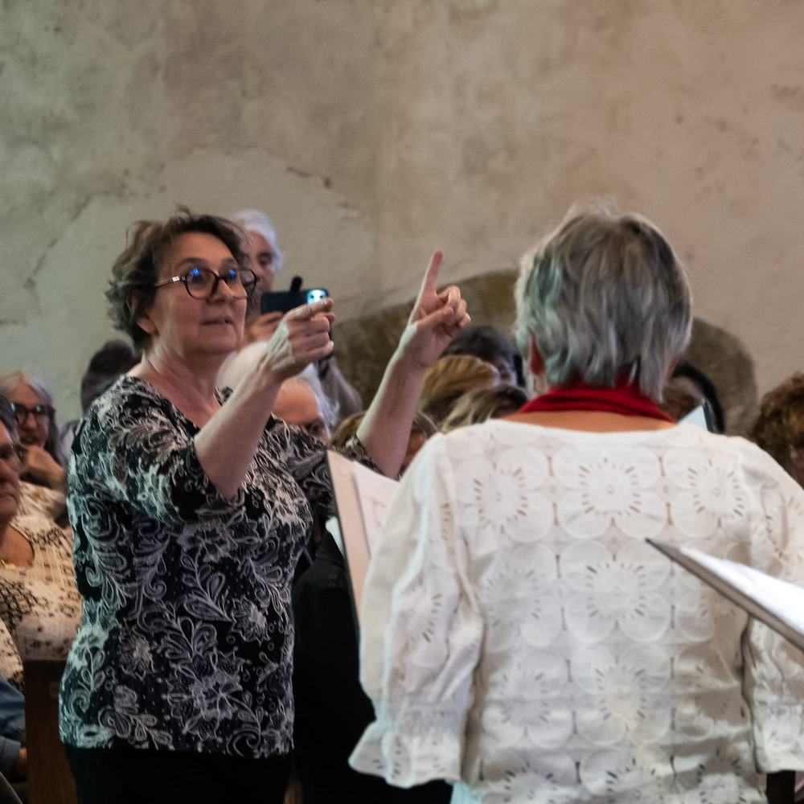

Des voix, un cœur, une porte ouverte
Une chorale polyphonique associative, née en 1999 sur la côte vendéenne.
Une chorale polyphonique ouverte à tous
La Chorale polyphonique À Chœur Ouvert (A.C.O.) est une association dont le but est de vulgariser le chant choral. Elle a été créée en 1999 et réunit des choristes de Saint-Hilaire-de-Riez, de Saint-Jean-de-Monts et des environs.
Polyphonique : chacun chante sa ligne, et c’est l’ensemble des voix qui fait la musique. Ici, on vient pour le plaisir de chanter, d’apprendre et de partager avec le public lors de concerts, souvent au profit d’associations.

Plus de vingt-cinq ans de chant
1999 · La naissance du chœur
La chorale est créée à Saint-Hilaire-de-Riez, avec l’envie de rendre le chant choral accessible.
Des concerts qui font du bien
Au fil des saisons, la chorale chante dans les églises de la côte vendéenne, avec d’autres chorales invitées, au profit de RETINA France, de la SNSM, des Restos du Cœur, des sapeurs-pompiers…
Rentrée 2024 · Un nouveau départ
Sophie Sebbah prend la direction du chœur. Le répertoire est entièrement renouvelé, pour le plus grand plaisir du public de Saint-Hilaire-de-Riez et de Saint-Jean-de-Monts.
31 mai 2026 · Premier concert à Notre-Dame-de-Monts
La chorale chante pour la première fois à l’église Notre-Dame-de-l’Assomption, avec un nouveau programme.
Ce qui nous réunit
L’ouverture
Le solfège n’est pas indispensable. On entre dans le chœur avec sa voix et son envie, on progresse ensemble.
Le partage
« Écoutez-les, Regardez-les, Vivez-les. » Chanter pour soi, mais surtout avec les autres et pour le public.
La solidarité
De nombreux concerts sont donnés au profit d’associations caritatives, avec une participation libre.
Chœur ou cœur ? Les deux.
« À Chœur Ouvert » joue avec une expression bien connue : on parle à cœur ouvert quand on se confie sans détour. Ici, on chante à chœur ouvert : la chorale accueille chacun, et ouvre ses concerts à tous.
Le logo le dit sans mots : une clé de sol qui s’enroule autour d’un cœur rouge, et une portée qui s’envole en notes de musique.


Sophie Sebbah
De formation classique, Sophie Sebbah a étudié le piano, le chant et la musique de chambre, puis la formation musicale, l’écriture et la musicologie à la Sorbonne. Après une carrière d’artiste lyrique, elle a dirigé une école de musique associative, des chœurs et une harmonie dans l’est de la France.
Ouverte à toutes les cultures, elle aime emmener ses chanteurs vers des horizons inconnus : classique, pop, chanson contemporaine ou musiques du monde, « du moment que ce soit bien écrit et que ça exprime quelque chose ». Elle se perfectionne en direction de chœur auprès de Sabine Aubert et dirige aussi les chorales « Chantons » et « La Bella Vita ».
Ceux qui font vivre l’association
Et si vous chantiez avec nous ?
Venez essayer sans engagement : 2 séances gratuites avant de vous inscrire. Aucune connaissance du solfège n’est nécessaire.